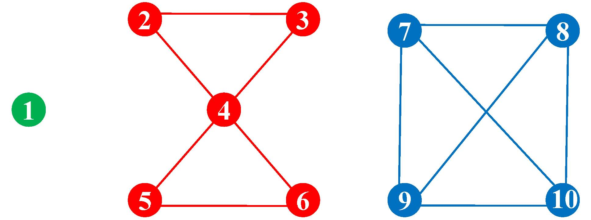

Pregel+ system code is just a set of header files, one may include them into the application code and compile using GCC. The current system code runs in Linux.
Toy Graph
Each line represents a vertex.
Line format: vertex-ID \t number-of-neighbors neighbor1-ID neighbor2-ID •••

To run the application code with the toy graph, put the data to HDFS as follows: